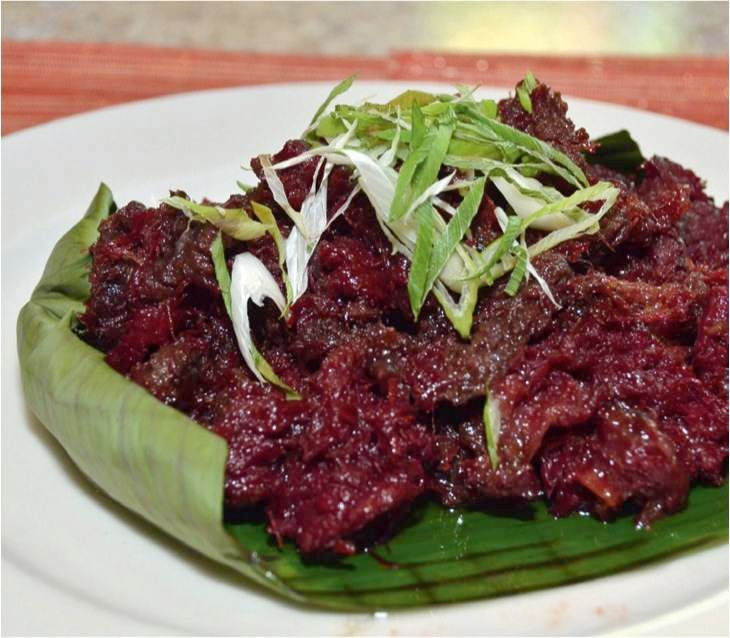

Pindang Damulag
Pindang Damulag is a Kapampangan delicacy… what the Tagalogs might refer to as Tosinong Kalabaw… Tocino is the Filipino term for any cured meat.
Recipes
- Carabao meet
- Sugar
- Sukang Sasa
Procedures
- Slice the carabao meet into tocino slice.
- Add sugar and sukang sasa in the slice carabao and then wait it over night to tick the flavor.
- Cook the carabao meet in to a hot cooking oil an then wait until it reddish.
- After you see it reddish its ready to serve.